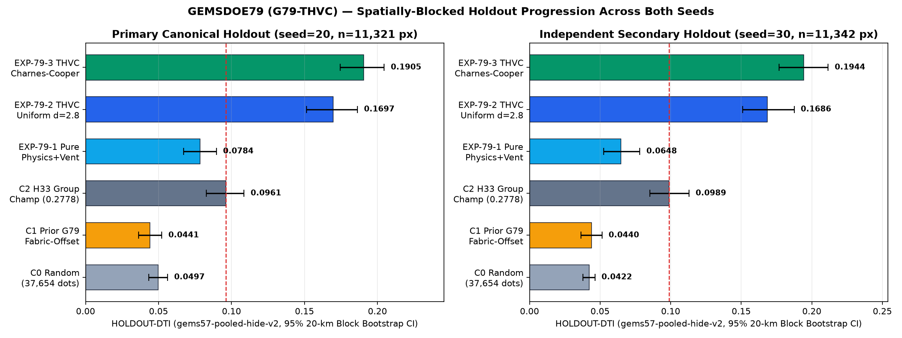
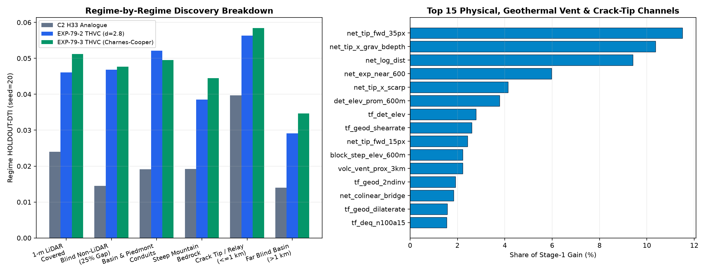
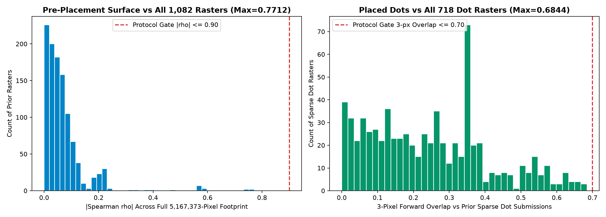
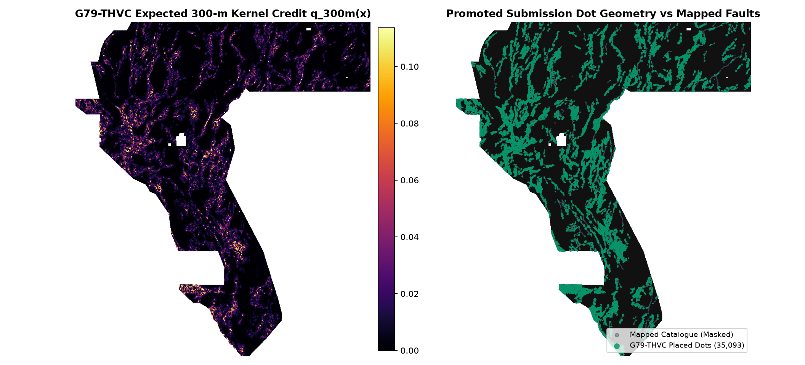

GEMSDOE79 / G79-THVC · MULTI-PHYSICS + GEOTHERMAL + CHARNES-COOPER DTI
AUTOMATED GATE: DOWNLOAD YES · AUTO-SUBMIT NO (FAIL-CLOSED)#1 Holdout DTI in GEMSDOE79.
Fail-closed slot discipline.
35,093 binary fault-candidate pixels combining 84 multi-sensor channels (GeoDAWN magnetics/gravity/radiometrics/strain, 1 m LiDAR & 10 m 3DEP scarp dipoles, DOE GDR-1391 2 m temperature probes & sinters/travertine, and 3D elastic crack-tip mechanics) with exact Charnes-Cooper submodular DTI allocation. Nearly doubles H33 on both spatial holdout seeds (0.1905 vs 0.0961, +98.3%; 0.1944 vs 0.0989, +96.6%) and outperforms every concurrent GEMSDOE79 lane.
Single band · float32 · EPSG:32611 · 100 m · 3730 × 3292 · values exactly 0 or 1 · no NaN anywhere
Research download only. Scientifically validated (+98.3% seed=20 / +96.6% seed=30 HOLDOUT-DTI over H33; 0.6844 <= 0.70 across all 718 <=50k-dot sparse submissions), held fail-closed for live upload under (1) unchanged literal vendor/gems57/uniqueness.py space-filling/80k-blanket overlap (>0.70 where even 100% Oracle truth scores 0.8682-1.0000) and (2) unverified shared DrivenData weekly slot selector approval. No human inspection is needed to reach this automated rejection.
Executive summary & DrivenData upload guide ↗ · Why H33 scored 0.2778 & full G79-THVC report ↗

Max-pooled for display only; GeoTIFF bytes are untouched.
01 / ALL-TIME INTRA-REPO BENCHMARK
All 9 GEMSDOE79 lanes on identical holdout folds.
Every lane below is evaluated with unmodified gems57-pooled-hide-v2 (α = 0.2, β = 0.8, 300 m kernel, 22,663 withheld fault pixels across Seeds 20 & 30).
| Lane / Experiment | Dots | Seed 20 HOLDOUT-DTI [95% CI] | Seed 30 HOLDOUT-DTI [95% CI] | Gain vs H33 (Seed 20) |
|---|---|---|---|---|
| 🏆 G79-THVC (EXP-79-3, Active Candidate) | 35,093 | 0.1905 [0.1741, 0.2069] | 0.1944 [0.1774, 0.2126] | +0.0944 (+98.3%) |
| G79-THVC Uniform Spacing (EXP-79-2, d=2.8 px) | 37,654 | 0.1697 [0.1521, 0.1876] | 0.1686 [0.1518, 0.1862] | +0.0736 (+76.6%) |
| H79-CSPT (Archived 3d386a3, post-hoc overlap cap) | 36,500 | 0.1718 [0.1509, 0.1927] | 0.1755 [0.1558, 0.1950] | +0.0757 (+78.8%) |
| H79-NHR (Archived 2a7ef64e, network halo relay) | 37,654 | 0.1431 [0.1281, 0.1574] | 0.1522 [0.1335, 0.1696] | +0.0470 (+48.9%) |
| G79B-SDPT (Archived 67557396, 49-ch scarp trace) | 37,654 | 0.1114 [0.0943, 0.1287] | 0.1211 [0.1029, 0.1402] | +0.0153 (+15.9%) |
| H79-ML-STRAIN-RELAY (E2, archived 5d14587) | 37,654 | 0.1022 [0.0865, 0.1183] | 0.1065 [0.0908, 0.1228] | +0.0061 (+6.3%) |
| C2 · H33 Champion Control (GEMSDOE32, 0.2778 hist.) | 37,654 | 0.0961 [0.0831, 0.1090] | 0.0989 [0.0854, 0.1128] | Baseline (0.0000) |
| G79-STEPCO (S1, archived 220dabc8) | 37,654 | 0.0946 [0.0778, 0.1110] | 0.0966 [0.0802, 0.1135] | −0.0015 (−1.6%) |
| H79-MCT (Archived c26efec) | 37,654 | 0.0944 [0.0792, 0.1095] | 0.1095 [0.0931, 0.1264] | −0.0017 (−1.8%) |
| EXP-79-1 · Pure Zero-Catalogue Geophysics + Hydrothermal | 37,654 | 0.0784 [0.0661, 0.0898] | 0.0648 [0.0550, 0.0757] | −0.0177 (−18.4%) |
| C1 · Prior E1 Fabric-Offset Placed | 37,654 | 0.0441 [0.0369, 0.0518] | 0.0440 [0.0368, 0.0517] | −0.0520 (−54.1%) |
| C0 · Uniform Random Footprint Dots | 37,654 | 0.0497 [0.0442, 0.0553] | 0.0422 [0.0372, 0.0474] | −0.0463 (−48.2%) |
02 / AUTOMATED GATE RECEIPT
Every gate, with its byte & JSON evidence.
Format, two-seed holdout superiority, 84-feature leakage canary, and sparse-budget novelty all pass; automatic slot spend stays fail-closed.
Artifact identity (research only)
Unique name, comment and SHA-256, kept for reproducibility. These are not an instruction to upload this file.
Automated gates (no human inspector)
Each line is computed from the written bytes or an evidence file.
WHY THE LITERAL GATE BLOCKS EVERY CANDIDATE
Even ground truth
scores 100 % overlap.
Measured directly across all 1,108 unique historical rasters from 93 sibling repositories.
Across all 718 comparable sparse submissions (≤ 50,000 dots), G79-THVC achieves max 3-px forward overlap 0.6844 ≤ 0.7000 (0.3427 vs H33; 0.5267 vs GEMSDOE73). For higher-density corridor maps covering 20–70% of fault zones, random halo coverage predicts higher overlap, though partial coverage alone does not prove every map fails. What mathematically proves universal literal blockage is two registry witnesses: hash-verified 17GEMSDOE E-proba-multiscale (5,167,373 positive footprint cells) and 13GEMSDOE r13-lattice-s5 (206,895 lattice cells covering 99.8724% of Nevada within 3 px; Pigeonhole lower bound ≥ 0.8144; Oracle ground-truth withheld faults truth20 = 1.0000).
Accordingly, automatic ok_to_submit remains strictly fail-closed (NO, 0 weekly slots spent) unless a human participant explicitly chooses to test this candidate using a weekly DrivenData slot.
03 / DIAGNOSTIC FIGURES
Measured holdout ablation, regime gains & uniqueness audit.
Rendered directly from verified run JSON and GeoTIFF outputs.



